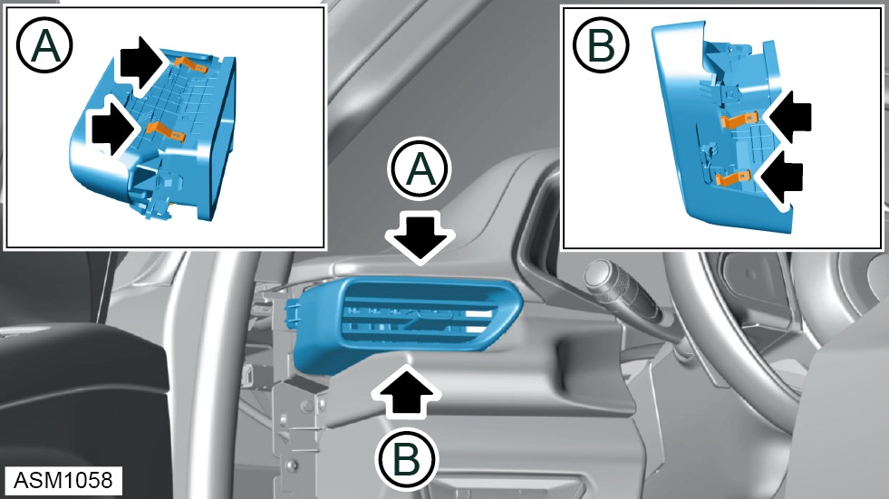
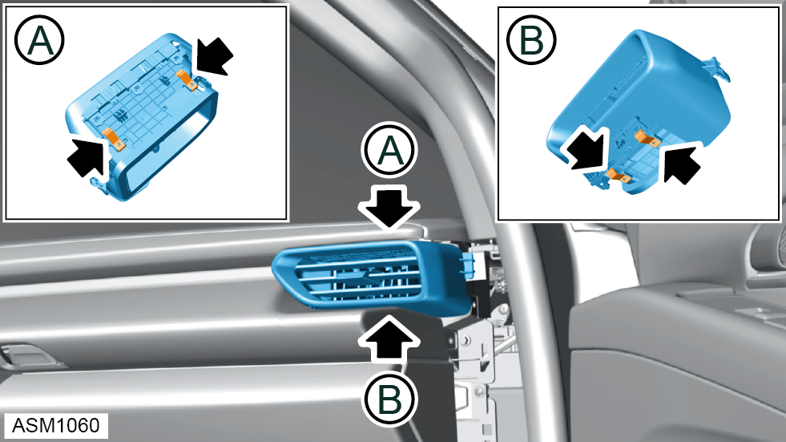

Face Level Vent - In Dash
Print
Operation Code: 18.13.10-02
Removal
- Remove fascia finisher panel left side. Refer to procedure.
- Remove fascia finisher panel right side.
NOTE: Procedure is the same for left side component.

- Disengage clips (x4) securing right side face level vent to instrument panel.
- Remove left side face level vent.

- Disengage clips (x4) securing right side face level vent to instrument panel.
- Remove right side face level vent.
- Disengage clips (x8) securing center vent to instrument panel.
- Remove centre vent.
Installation
- Installation is the reverse of removal procedure.